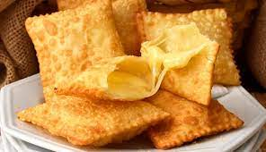

Ingredientes:
- 500g de massa de pastel
- 200g de queijo mussarela ralado
- 1 ovo para pincelar
- Óleo para fritar
Modo de Preparo:
- Abra a massa de pastel com um rolo em uma superfície enfarinhada.
- Corte a massa em círculos utilizando um cortador ou um prato como molde.
- Coloque uma porção de queijo ralado em um dos lados do círculo de massa.
- Dobre o outro lado da massa por cima do recheio e pressione as bordas com um garfo para fechar bem.
- Repita o processo com o restante da massa e do recheio.
- Bata o ovo em um recipiente e pincele os pasteis com ele.
- Aqueça o óleo em uma panela funda e frite os pasteis em imersão até que fiquem dourados e crocantes.
- Retire os pasteis do óleo com uma escumadeira e deixe-os escorrer em papel-toalha antes de servir.